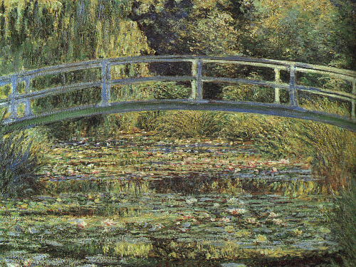
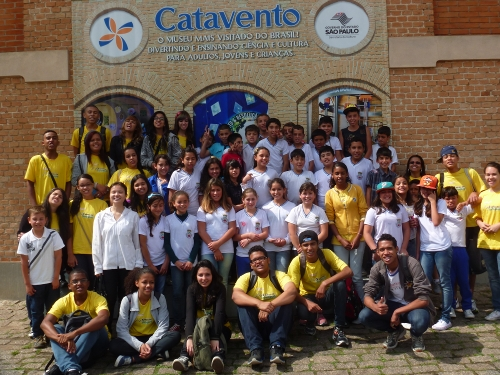
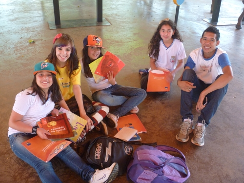
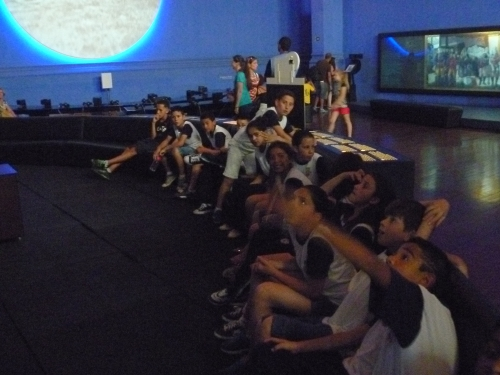

O único programa educativo de leitura que une Oficinas Pedagógicas e Estudo do Meio com a Biblioteca Itinerante com 100 títulos diferentes e 4000 livros paradidáticos!




O Saci e a Reciclagem
O Saci é um dos personagens mais populares do folclore brasileiro. Simpática e divertida, ele é conhecido por suas brincadeiras. Nesta história, ele decide aprontar algumas de suas travessuras e acaba recebendo da natureza uma importante lição. O Saci aprendeu sobre a importância da reciclagem do lixo.
Mas, afinal, você sabe o que é reciclagem? Você imagina em que podem ser transformadas garrafas de plástico, de vidro ou latas de alumínio? Então, acompanhe as aventuras do Saci e saiba mais sobre a reciclagem do lixo, um processo tão importante para o...
Bia na África
Bia é filha de uma diplomata e viaja com a mãe por diferentes partes do mundo. Nessas viagens ela conhece muitas das influências que outros países trouxeram para o Brasil. Neste livro viaje com a Bia para a África! Conheça um pouco do Egito, Quênia, Mali, Congo, Zimbábue e Sudão. Depois, more com a Bia em Angola! Lá você encontrará muitas das raízes do Brasil e dos Brasileiros. Boa viagem!
Título do Próximo Livro
Esta é uma área reservada para o próximo livro. Você pode copiar o código de uma das 'book-item' divs acima e colar aqui para adicionar um novo título.